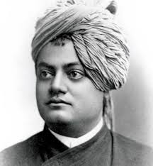
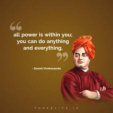
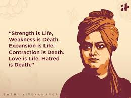
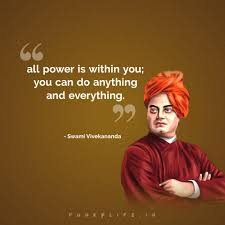
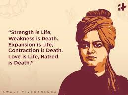

Early Life & Education

Born Narendranath Dutta, into an affluent Bengali family in Calcutta, Vivekananda was one of the eight children of Vishwanath Dutta and Bhuvaneshwari Devi. He was born on January 12, 1863, on the occasion of Makar Sankranti. Father Vishwanath was a successful attorney with considerable influence in society. Narendranath’s mother Bhuvaneshwari was a woman endowed with a strong, God-fearing mind who had a great impact on her son. As a young boy, Narendranath displayed sharp intellect. His mischievous nature belied his interest in music, both instrumental as well as vocal. He excelled in his studies as well, first at the Metropolitan institution, and later at the Presidency College in Calcutta. By the time he graduated from the college, he had acquired a vast knowledge of different subjects. He was active in sports, gymnastics, wrestling and body building. He was an avid reader and read up on almost everything under the sun. He perused the Hindu scriptures like the Bhagvad Gita and the Upanishads on one hand, while on the other hand he studied western philosophy, history and spirituality by David Hume, Johann Gottlieb Fichte and Herbert Spencer.
Spiritual awakening
In 1884, Naredranath underwent a considerable financial distress due to the death of his father as he had to support his mother and younger siblings. He asked Ramakrishna to pray to the Goddess for the financial welfare of his family. On Ramakrishna’s suggestion he himself went to the temple to pray. But once he faced the Goddess he could not ask for money and wealth, instead he asked for ‘Vivek’ (conscience) and ‘Bairagya’ (reclusion). That day marked the complete spiritual awakening of Narendranath and he found himself drawn to an ascetic way of life.
Life of a monk
During the middle of 1885, Ramakrishna, who had been suffering from throat cancer, fell seriously ill. In September 1885, Sri Ramakrishna was moved to Shyampukur in Culcutta, and a few months later Narendranath took a rented villa at Cossipore. Here, he formed a group of young people who were ardent followers of Sri Ramakrishna and together they nursed their Guru with devoted care. On 16 August 1886, Sri Ramakrishna gave up his mortal body. After the demise of Sri Ramakrishna, around fifteen of his disciples including Narendranath began to live together in a dilapidated building at Baranagar in North Calcutta, which was named Ramakrishna Math, the monastic order of Ramakrishna. Here, in 1887, they formally renounced all ties to the world and took vows of monkhood. The brotherhood rechristened themselves and Narendranath emerged as Vivekananda meaning "the bliss of discerning wisdom". The brotherhood lived off on alms donated voluntarily by patrons during holy begging or ‘madhukari’, performed yoga and meditation. Vivekananda left the Math in 1886 and went on a tour of India on foot as a ‘Parivrajak’. He travelled the breadth of the country, absorbing much of the social, cultural and religious aspects of the people he came in contact with. He witnessed the adversities of life that the common people faced, their ailments, and vowed to dedicate his life to bring relief to these suffering.
Speech at the World Parliament of Religions
During the course of his wanderings, he came to know about the World Parliament of Religions being held in Chicago, America in 1893. He was keen to attend the meeting, to represent India, Hinduism and his Guru Sri Ramakrishna’s philosophies. He found assertion of his wishes while he was meditating on the rocks of Kanyakumari, the southernmost tip of India. Money was raised by his disciples in Madras (now Chennai) and Ajit Singh, Raja of Khetri, and Vivekananda left for Chicago on May 31, 1893 from Bombay. He faced insurmountable hardships on his way to Chicago, but his spirits remained as indomitable as ever. On 11 September 1893, when the time came, he took the stage and stunned everyone with his opening line “My brothers and sisters of America”. He received a standing ovation from the audience for the opening phrase. He went on to describe the principles of Vedanta and their spiritual significance, putting Hinduism on the map of World Religions. He spent the next two and a half years in America and founded the Vedanta Society of New York in 1894. He also travelled to the United Kingdom to preach the tenets of the Vedanta and Hindu Spiritualism to the western world.
His Preachings

 



1.Truth can be stated in a thousand different ways, yet each one can be true
2.You have to grow from the inside out. None can teach you, none can make you spiritual. There is no other teacher but your own soul.
3.You cannot believe in God until you believe in yourself
4.Talk to yourself once in a day, otherwise you may miss meeting an intelligent person in this world.
5.In a conflict between the heart and the brain, follow your heart.
Conclusion
Swami Vivekananda had predicted that he will not live till the age of forty. On July 4, 1902, he went about his day's work at the Belur Math, teaching Sanskrit grammar to the pupils. He retired to his room in the evening and died during meditation at around 9. He is said to have attained ‘Mahasamadhi’ and the great saint was cremated on the Banks of river Ganga.Swami Vivekananda revealed to the world the true foundations of India's unity as a nation. He taught how a nation with such a vast diversity can be bound together by a feeling of humanity and brother-hood. Vivekananda emphasized the points of drawbacks of western culture and the contribution of India to overcome those. Netaji Subhash Chandra Bose once said: "Swamiji harmonized the East and the West, religion and science, past and present. And that is why he is great. Our countrymen have gained unprecedented self-respect, self-reliance and self-assertion from his teachings." Vivekananda was successful in constructing a virtual bridge between the culture of East and the West. He interpreted the Hindu scriptures, philosophy and the way of life to the Western people. He made them realize that in spite of poverty and backwardness, India had a great contribution to make to world culture. He played a key role in ending India's cultural isolation from the rest of the world.